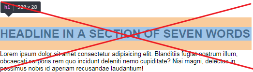
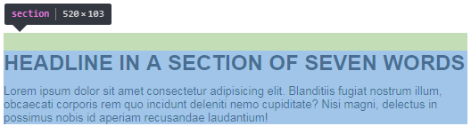

Цель этой статьи не усложнить простые вещи, а акцентировать внимание на известных стандартах, о которых почему-то
забывают. Важно соблюдать осмысленную структуру во всех аспектах верстки, и не менее важно придерживаться ее в отступах.
И одним из основных принципов верстки является гибкость. А именно, возможность легко вносить какие-либо изменения и
ничего при этом не сломать.
Правильное обращение с margin и padding играет очень большую роль в этом деле.
Ниже перечисленные принципы выполняются в среде позиционирования элементов на странице. В элементах декора тоже
выполняются. Но не так категорично.
Основные принципы:
- Отступы идут от предыдущего элемента к следующему.
- Отступ задается последнему возможному элементу в доме.
- Отступы нельзя задавать для независимых элементов ( БЭМ блок ).
- У последнего элемента группы, отступ обнуляется (всегда).


Отступы идут от предыдущего элемента к следующему.
margin(ы) задаются от предыдущего элемента к следующему, от первого ко второму, сверху вниз, слева направо.
Это значит,что такие свойства как margin-left и margin-top не используются (не без исключений). С padding все немного наоборот (кроме того, что он используется для, декоративных целей, увеличения области ссылки и т.д.). Когда блоку нужен отступ сверху или слева, он его получает за счет padding-top и padding-left родителя.